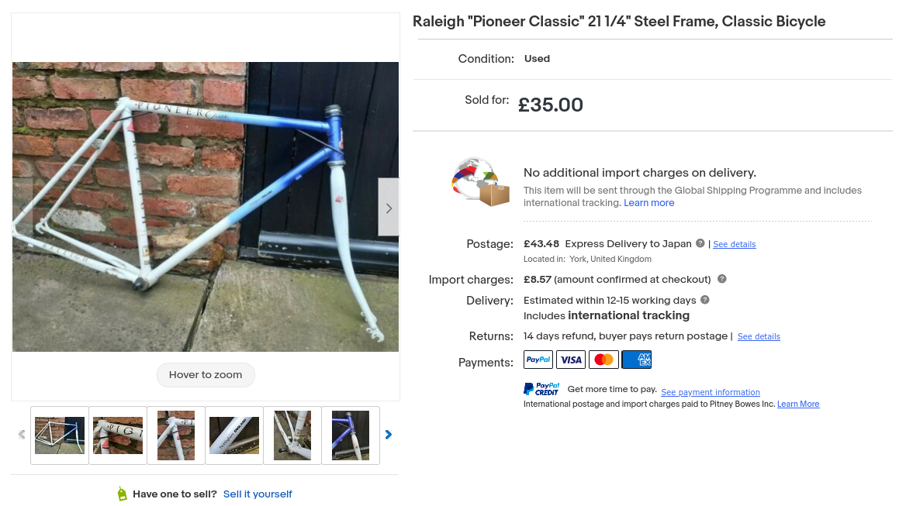
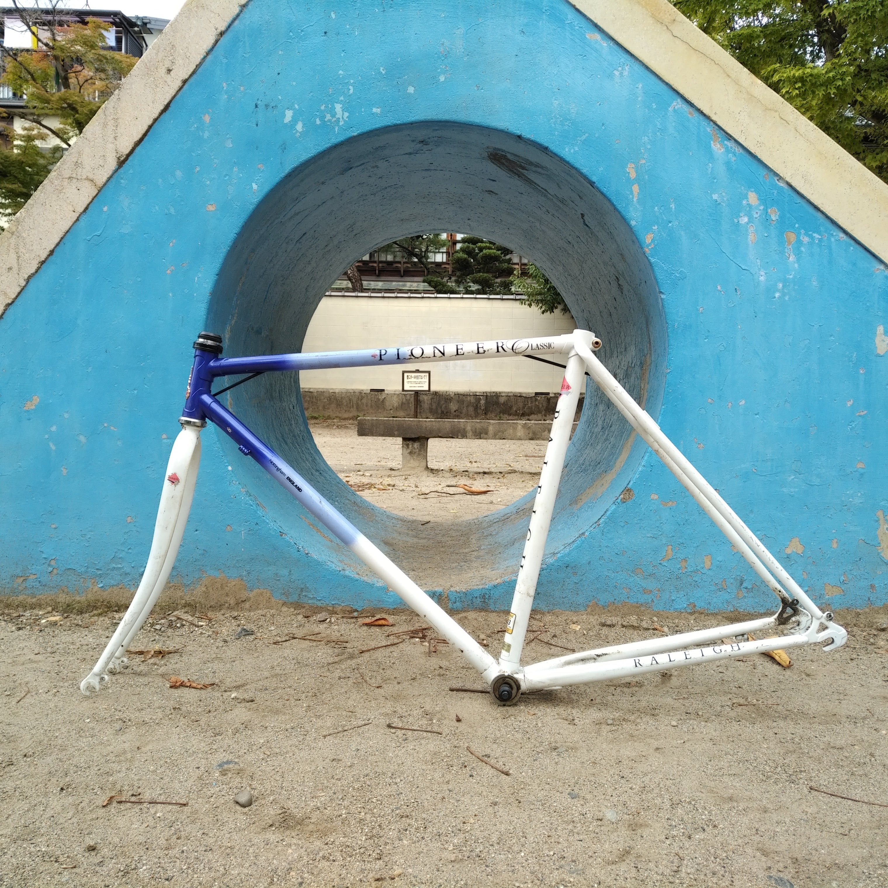
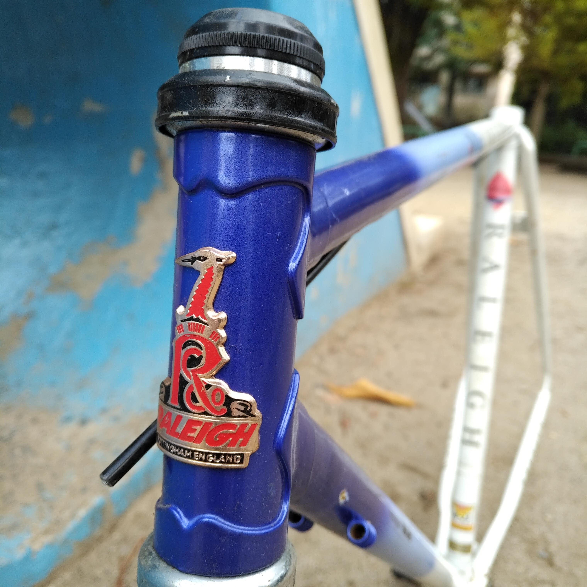
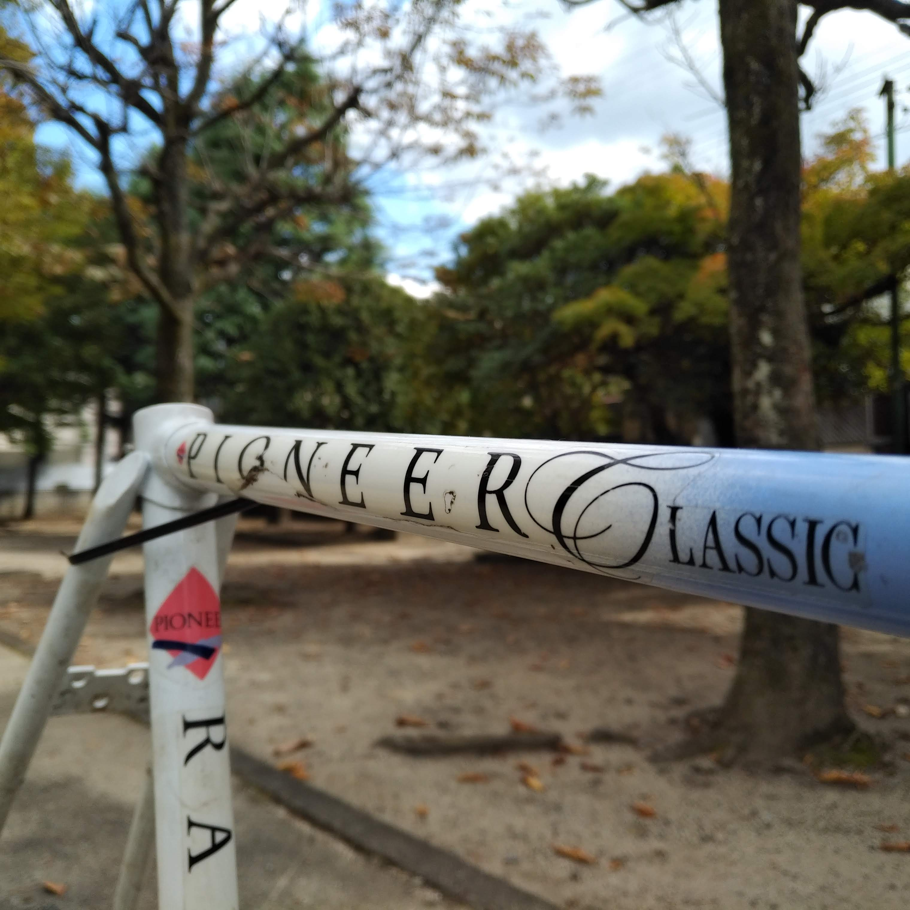
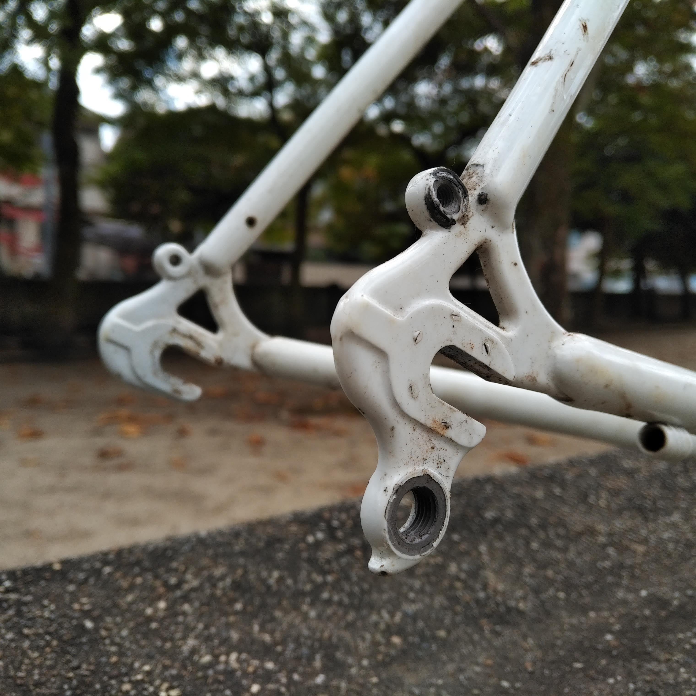

泥除けすら美しい自転車
初めて買った自転車がラレーの Detour というクロスバイクだった。
それから何台か他のブランドに浮気したこともあったが、クロモリフレームのしなやかさ、長距離を走っても疲れない乗り心地、そして何よりも主張しすぎないカラーリングと英国紳士のごときそのフォルムは他のブランドではなかなか出し得ない魅力であると思う。
街乗りらしいおしゃれさを兼ね備えつつも、キャリアーを付ければ旅行用の自転車にもなる。泥除けすら美しい自転車である。
しかし残念なことに、英国産のラレーを日本の街角で見かけることはかなり少ない。
月に一度か二度ラレーを見かけると、古い友人に突如出くわしたときのそれと同じような感動を覚える。それが旧車ならなお良い。ピカピカに磨かれたヘッドマークを見て、長く大切に乗られているのだと思うからである。
Raleigh Pioneer Classic

ラレーをいつも血眼になって探している。国内のみならず今回は eBay にも挑戦してみた。
海外通販は初めてであったがラレーを求める情熱が言語の壁を越えさせた。
気付いたときには購入ボタンを押していた。35 ポンドであった。ラレーの故郷イギリスから輸入しようというわけである。
そっけない概要欄からわかったことは「Raleigh Pioneer Classic」という自転車の名前だけであった。
しかし、この名前で検索してもまとまった情報はなかなか出てこない。いつ頃製造されたモデルなのかもわからない。
ちなみに、Raleigh UK のサイトを見ると、「Pioneer」というモデルは今もあるらしい。昔のカタログか何かを見ればわかりそうだ。
イングランドの片田舎からはるばる日本へ
支払いから 2 週間で自転車は到着した。DHL のサービスは優秀だ。どうせ税関手続きで何日も待たされるのであろうと踏んでいたら、 イングランドの片田舎、リッチフィールドの町を出たときに提示されたお届け日ぴったりに届けられたのだから驚いた。

地面と平行なトップチューブ、細身のパイプで組まれたきれいなフレームである。 写真では見にくいが、ラグ溶接がとても上品できれいである。

ラレーといえば白鷺をモチーフにしたヘッドバッヂ。 空気抵抗や軽量化を考慮すればペイントやステッカーで代替可能であるが、 ヘッドバッヂのほうが好きである。クラシカルな風合いが自転車全体の雰囲気を引き締めてくれるからである。

フレームにあるロゴ類はステッカーのようだ。こちらは経年劣化が激しい。 このままにしてもいいが、剥がしてしまうか、きれいに写し取ってカッティングシートで同じものを作成しようかと考えている。

検索しても出てこなかったのがリアのエンド幅である。 実測では 126mm であった。このままでも良いが拡張して 130mm ホイールを履かせようかと考えている。
レストアの方向性
レストアというとよくないかもしれない。フレーム以外は最新のパーツに交換してこの自転車を蘇らせたい。
レストアというよりリノベーションというべきであろう。
ただ、フレームの持つ風合いを残すためにいくつか工夫をしたい。
ランドナーバーと W レバーの導入を考えている。
クラシカルな上品さと、最新のパーツを用いた快適さを両立させる自転車を組み上げたい。